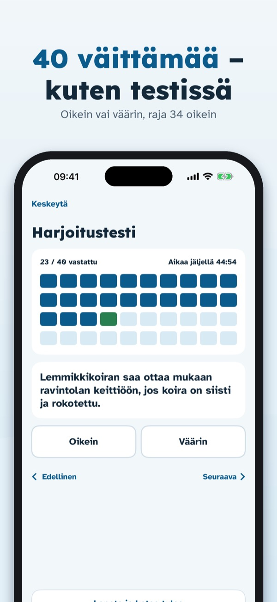
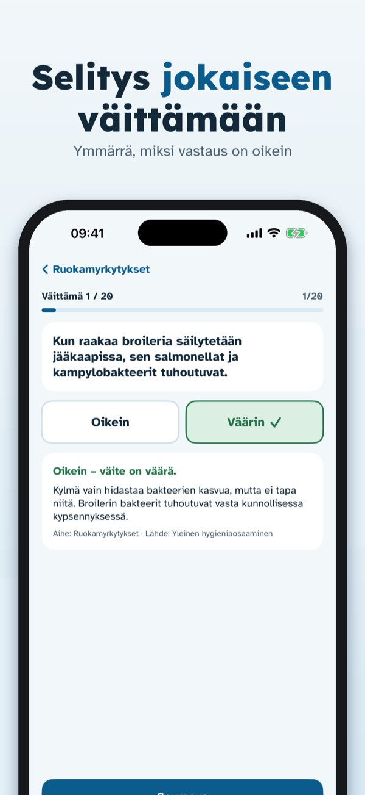
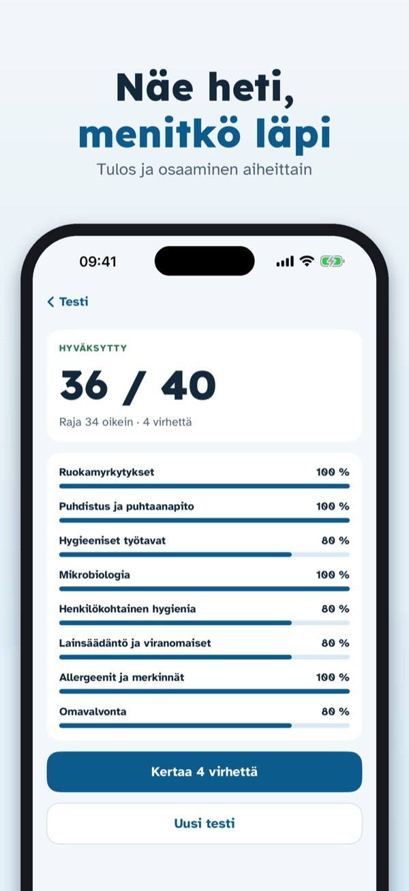
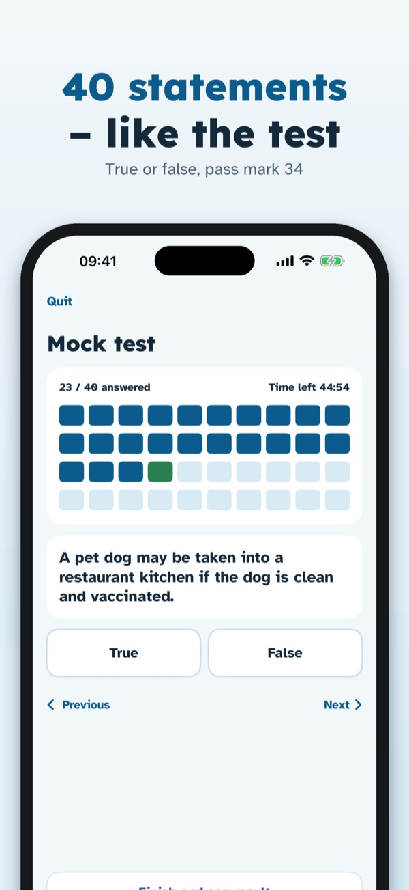
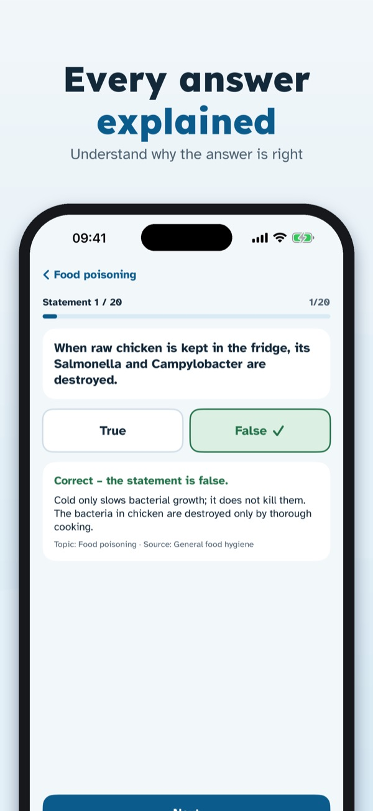
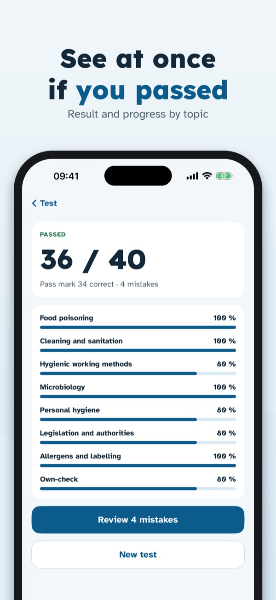
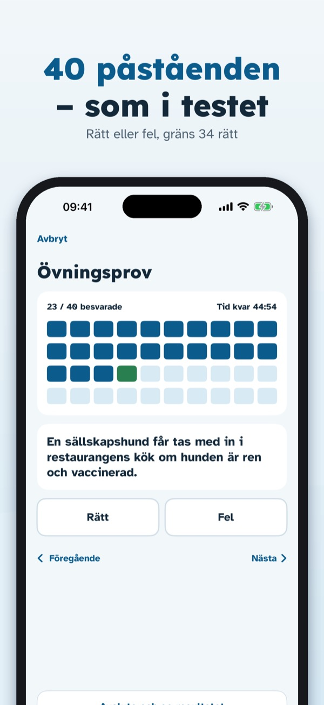
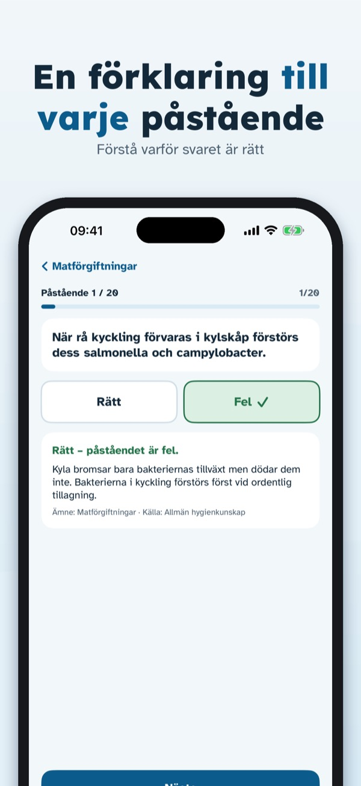
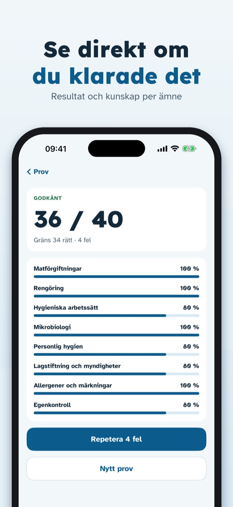

Harjoitustesti ja selitykset



Hygieniapassi Treeni auttaa harjoittelemaan hygieniapassitestiä samanlaisilla oikein/väärin-väittämillä kuin testissä.
Yksi harjoituskoe, osa väittämistä ja sanasto ovat käytettävissä ilman ostoa. Kertaosto avaa kaikki väittämät, rajattomat harjoituskokeet, virheiden kertauksen ja lämpötilasivun. Ei tilausta.
Hygieniapassi Treeni on itsenäinen harjoitussovellus. Se ei ole Ruokaviraston sovellus eikä myönnä hygieniapassia; passin saa hyväksytyltä testaajalta. Väittämät on kirjoitettu itse julkaistujen osaamisvaatimusten pohjalta.
Terms of Use (EULA): https://www.apple.com/legal/internet-services/itunes/dev/stdeula/
Privacy: https://baytechbv.github.io/privacy/hygieniapassi-fi/
Finnish hygiene passport test



Hygieniapassi Treeni helps you practise for the Finnish hygiene passport test (hygieniapassi) with true/false statements like the ones in the test – in English, Finnish or Swedish.
One mock test, part of the statements and the glossary can be used without a purchase. A one-time purchase unlocks all statements, unlimited mock tests, mistake review and the temperature page. No subscription.
Hygieniapassi Treeni is an independent practice app. It is not an app of the Finnish Food Authority (Ruokavirasto) and does not issue the hygiene passport; you get the passport from an approved tester. Statements are our own, written from the published competence requirements.
Terms of Use (EULA): https://www.apple.com/legal/internet-services/itunes/dev/stdeula/
Privacy: https://baytechbv.github.io/privacy/hygieniapassi-fi/
Övningsprov med förklaringar



Hygieniapassi Treeni hjälper dig att öva inför hygienpasstestet i Finland med rätt/fel-påståenden som i testet – på svenska, finska eller engelska.
Ett övningsprov, en del av påståendena och ordlistan kan användas utan köp. Ett engångsköp låser upp alla påståenden, obegränsade övningsprov, felrepetition och temperatursidan. Ingen prenumeration.
Hygieniapassi Treeni är en fristående övningsapp. Den är inte Livsmedelsverkets (Ruokavirasto) app och utfärdar inget hygienpass; passet får du av en godkänd testare. Påståendena är våra egna och skrivna utifrån de publicerade kunskapskraven.
Terms of Use (EULA): https://www.apple.com/legal/internet-services/itunes/dev/stdeula/
Privacy: https://baytechbv.github.io/privacy/hygieniapassi-fi/